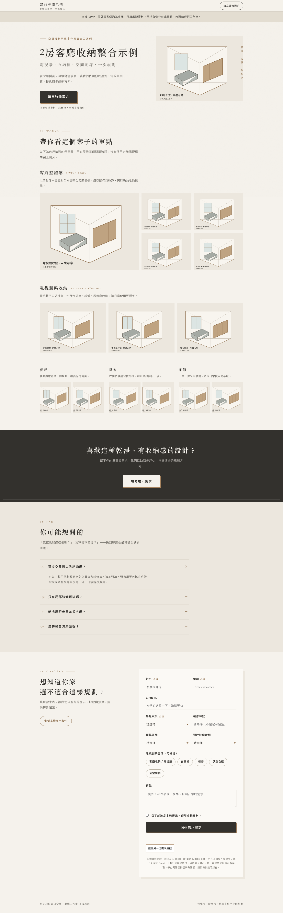

詢價流程：先把需求整理好
原本需求散落在訊息中；透過欄位整理屋況、預算與時程，得到可供洽談的需求紀錄。本機版本可收件與匯出，公開靜態版提供未送出的草稿；正式收件需另行串接。
實際本機畫面：自繪空間示意圖、需求表單、收件編號、管理清單與 CSV 匯出。已通過 10 項伺服器測試與 6 項瀏覽器檢查，包括失敗提示、避免重複收件與匯出。

目前資料存在本機，沒有正式權限、通知或雲端備份。這裡的截圖表單無法送出。
LOCAL DEMOS / 本機展示
這些是使用虛構品牌與測試資料的工程範例，不代表客戶、成交或正式上線。以下截圖及紀錄來自本機驗證，這個頁面不會收件或呼叫客服服務。
原本需求散落在訊息中；透過欄位整理屋況、預算與時程，得到可供洽談的需求紀錄。本機版本可收件與匯出，公開靜態版提供未送出的草稿；正式收件需另行串接。
實際本機畫面：自繪空間示意圖、需求表單、收件編號、管理清單與 CSV 匯出。已通過 10 項伺服器測試與 6 項瀏覽器檢查，包括失敗提示、避免重複收件與匯出。

目前資料存在本機，沒有正式權限、通知或雲端備份。這裡的截圖表單無法送出。
實際本機画面：虛構品牌、四組固定問題、詢價草稿下載。已通過 105 項測試與 5 項瀏覽器檢查；草稿不會保存，也沒有送到店家。

正式 LINE 接線、預約與付款尚未驗證，不包含在這個展示範圍。
商品範圍可討論常見問題接待、真人接手與操作介面；目前驗證的是固定 FAQ 本機流程，正式生成模型、LINE 串接、代管與維護需需求確認另報。
22 筆虛構 FAQ 與 30 題固定驗收題已在本機控制流程核對通過。147 項 Swift 測試通過，另測過接手、恢復、暫停與帳號隔離。以下為實際驗收輸出節錄，並非即時對話或生成式 AI 示範。
驗收案例 FAQ-01｜分類：faq 回應：這是完全虛構的「雲杉小屋設計示範店」，僅供本機流程展示。 外部送出：否 驗收案例 UNKNOWN-01｜分類：unknown 回應：我幫你請專人確認一下，確認後回覆你。 外部送出：否
未知問題交由真人處理；接手後停止自動回覆。目前沒有真人值班，也沒有正式 LINE、模型或永久對話保存。